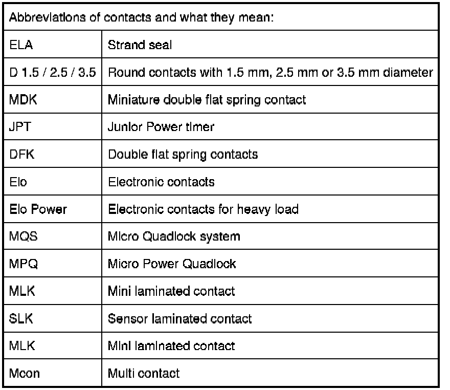
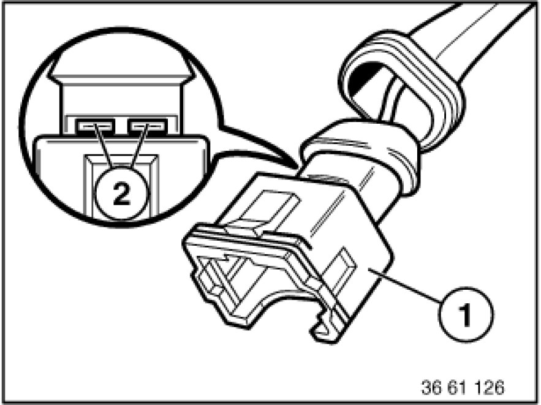

61 13 ... Opening Plug Housings and Removing Contacts of Different Plug Systems
61 13 ... - Opening plug housings and removing contacts of different plug systems

Special tools required:
- 61 0 300 61 0 300 Releasing Tool (Complete Kit)
- 61 0 400
- 61 1 100 61 1 100 Releasing Kit
- 61 1 150 61 1 150 Releasing Tool Kit


Important!
The contacts can be changed on ultrasonically welded plugs (1).
Ultrasonically welded plugs (1) must be replaced completely.
Ultrasonic-welded connectors (1) can be identified by the welds (2) on their longitudinal side.

Note:
Special tools referred to in the repair instructions below are contained in the following special tool kits:
- Release and press-out tool 61 1 150 61 1 150 Releasing Tool Kit
is replaced from 09/05 by 61 0 300 61 0 300 Releasing Tool (Complete Kit) (BMW) and 61 0 400 (MINI)
- Release and press-out tool 61 1 100 61 1 100 Releasing Kit (engine)
Repair instructions for opening plug housings and removing contacts of different plug systems:
Plug system D 1.5/D 2.5:
- Circular plugs, 7-, 8-pin, System D 2.5
- Circular plugs, 13-pin, System D 2.5
- Circular plugs, 20-pin, System D 2.5
- Circular plugs, 4-, 7-, 10-, 12-, 25-pin, System D 1.5/D 2.5
- In-line plugs, 15-pin, System D 2.5
- In-line plugs, 8-, 12-pin, System D 2.5
- In-line plugs, 30-pin, System D 2.5
- In-line plugs, 20-pin, System D 2.5
Plug system JPT/MDK/DFK:
- In-line plugs, 2-pin, System JPT ELA
- In-line plugs, 2-pin, System MDK 3plus 2.8
- In-line plugs, 4-pin, System DFK ELA
Plug system Elo/Elo-Power:
- In-line plugs, 4-, 10-pin, System Elo
- In-line plugs, 6- to 50-pin, System Elo
- In-line plugs, 3-, 6-pin, System Elo-Power 2.8
Plug system MQS/MPQ:
- In-line plugs, 6-, 8-pin, System MQS
- In-line plugs, 2-pin, System MPQ 2.8
- Control unit plugs, 25-, 35-, 55-, 83-, 88-pin
- In-line plugs, 24-pin, Hybrid System MQS/MPQ In-line Plugs, 6- to 50-pin, System Elo
- Socket housing 42-, 43-pin, Hybrid System MQS / MPQ
- Socket housings 2x21-, 2x27-pin, Hybrid System MQS/MPQ, Elo/Elo-Power In-line Plugs, 6-, 8-pin, System MQS
- In-line plugs, 30-pin, Hybrid System MQS/MPQ
- Socket housings, 5-, 8-pin, System MQS/MPQ
- Socket housing (radio plug), Hybrid System MQS/MPQ In-line Plugs, 24-pin, Hybrid System MQS/MPQ
For plug contact systems not listed, refer to Service Information:
SI 2 05 05 217
SI 2 05 06 294
SI 2 03 08 440
SI 2 08 06 312
SI 2 02 08 439
SI 2 01 08 438